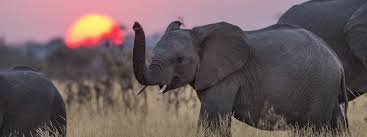

Kenya is a country in East Africa with coastline on the Indian Ocean. It encompasses savannah, lakelands, the dramatic Great Rift Valley and mountain highlands. It's also home to wildlife like lions, elephants and rhinos. From Nairobi, the capital, safaris visit the Maasai Mara Reserve, known for its annual wildebeest migrations, and Amboseli National Park, offering views of Tanzania's 5,895m Mt. Kilimanjaro.
